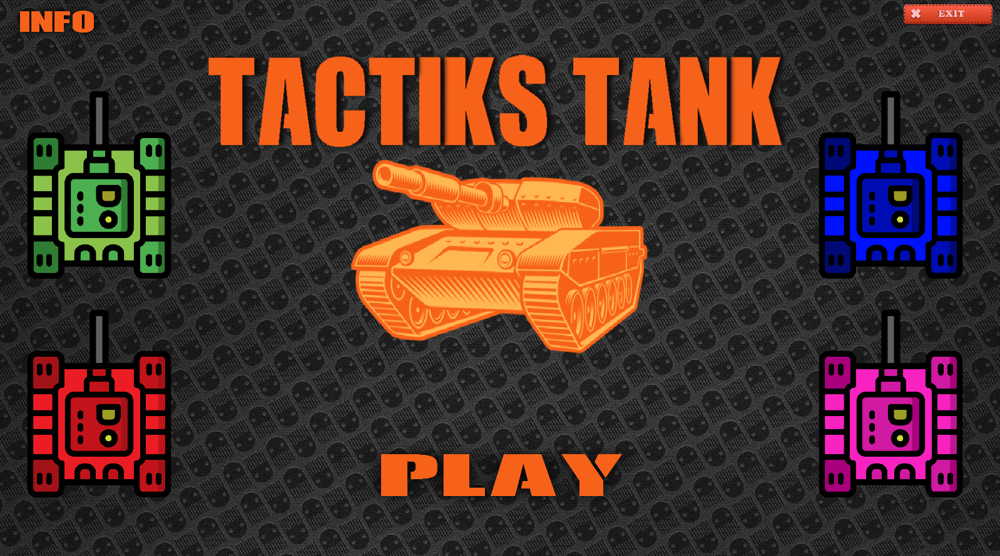
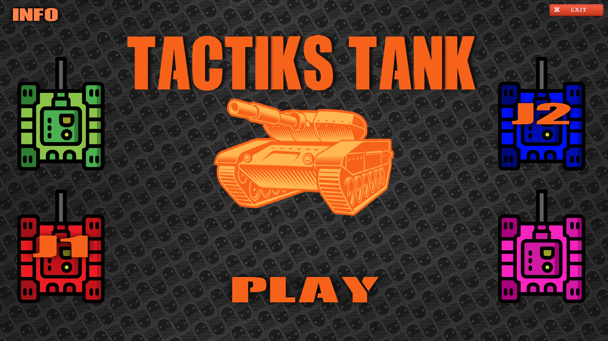
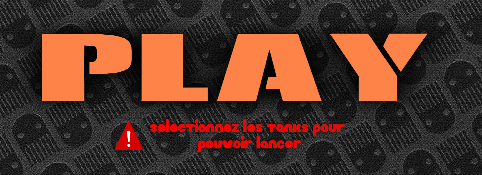
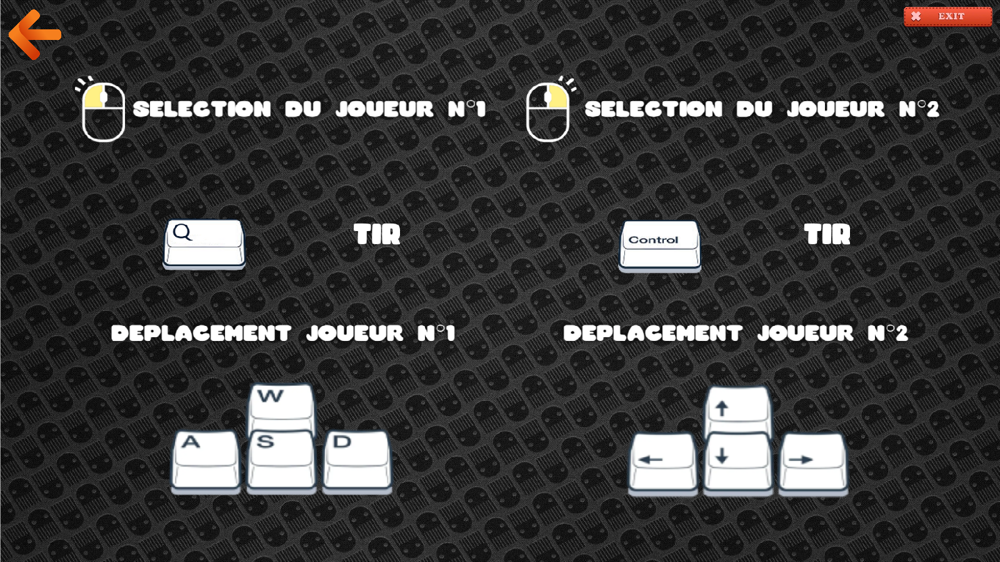
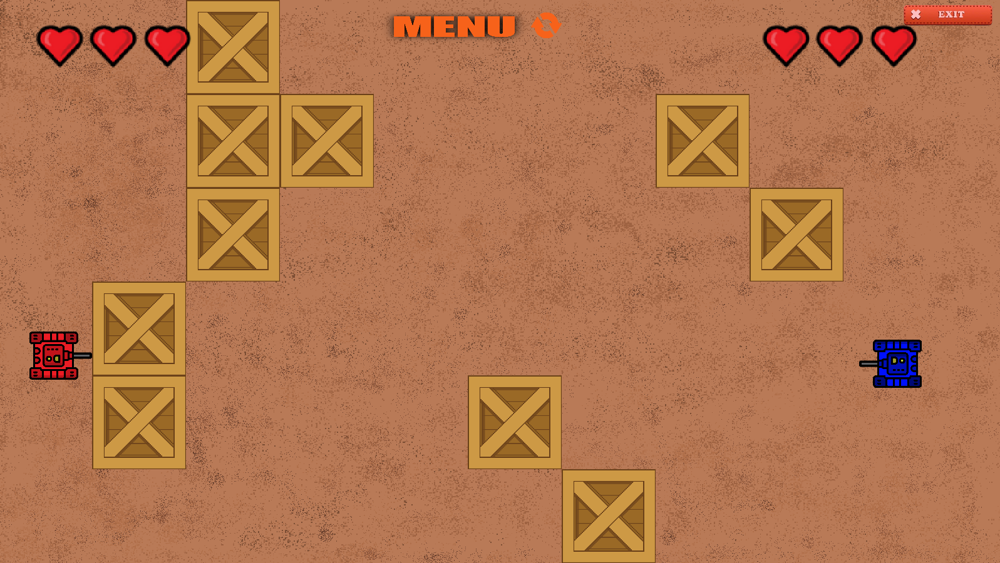

Notre jeu est assez simple à comprendre et donc très accessible.
Mais pour améliorer l'expérience de jeu nous avons rendu possible
la sélection de la couleur des tanks, vous pouvez choisir parmi 4 couleurs,
rose, bleu, vert et rouge.

Chaque joueur peut donc choisir la couleur qu'il souhaite.
il suffit simplement de cliquer sur la couleur choisie
,clic gauche pour J1 et clique droit pour J2.

Mais si par mégarde vous oubliez de selectionner le ou les
Tanks un petit message vous avertira et vous dira de les sélectionner.

Pour la plupart, vous ne savez pas jouer au jeu et vous ne connaissez pas les touches
, ne vous inquiètez pas nous avons pensé à tout. Il y a une page info qui vous explique
les touches à utiliser pour jouer.

Et pour finir voila à quoi ressemble le jeu, vous l'avez d'affiché sur l'écran la vie
de chaque joueur, une touche menu qui permet de changer de tank, quitter ou relancer, mais il y aussi
un bouton restart qui vous permet de relancer une partie plus rapidement. Et comme dit dans la présentation
chaque partie sera diffèrente, car les cartes sont générées de manière aléatoire.

© ROUSEAU Melvin et CHAPRON Raphaël - Toute reproduction interdite